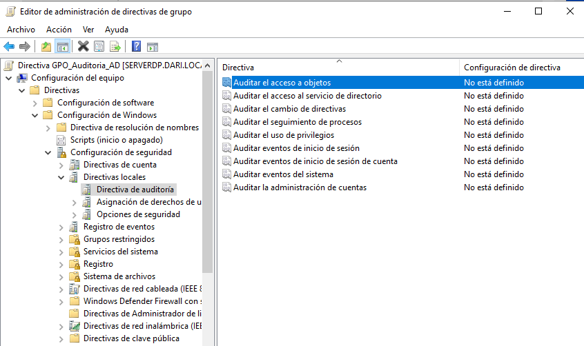
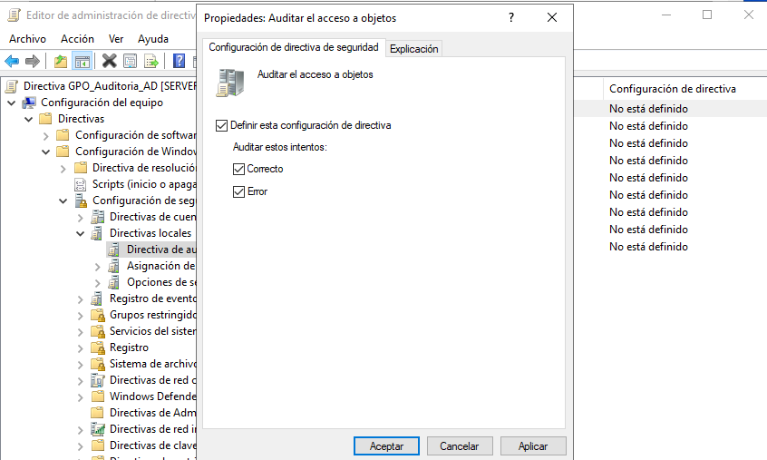
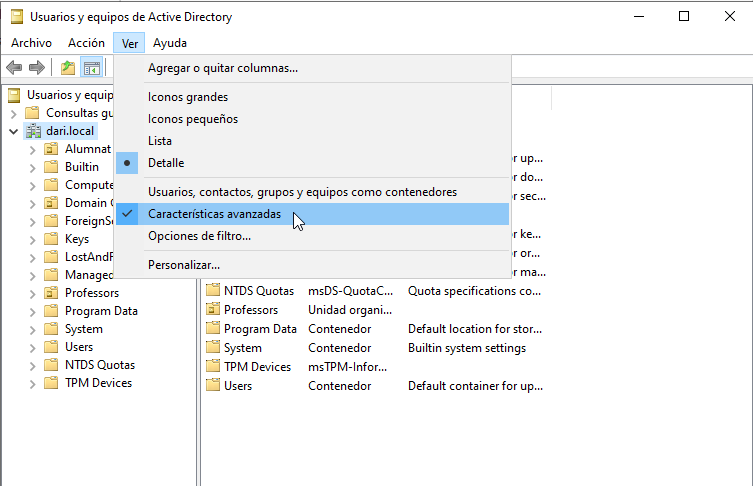
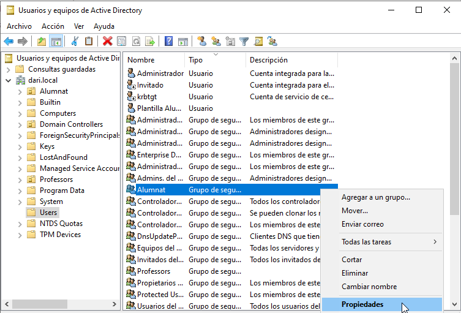
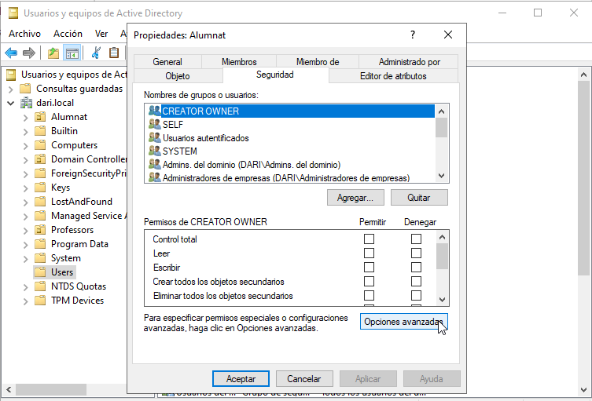
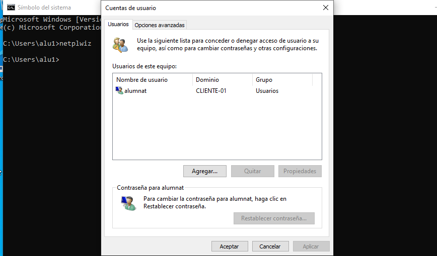
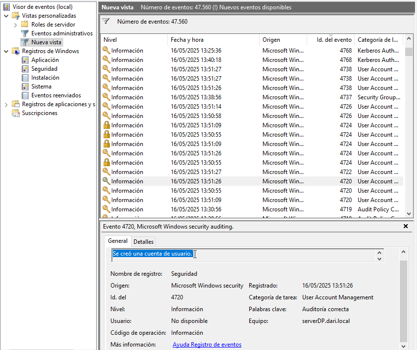

Configuración y prueba de la auditoría en Active Directory
La auditoría de Active Directory permite registrar acciones críticas como la creación, modificación o eliminación de objetos como usuarios, grupos o equipos. En este bloque se configura la auditoría desde el servidor, se vincula a una GPO y se verifica desde un cliente que los eventos quedan registrados.
Activar la auditoría en el controlador de dominio
- Abrir la consola Group Policy Management (
gpmc.msc). - Clic derecho sobre el dominio
dari.local> Create a GPO in this domain and Link it here... - Nombre:
GPO_Auditoria_AD - Clic derecho sobre la GPO > Edit.


Configurar las políticas de auditoría
Dentro del GPO, ir a:
Configuración del equipo > Directivas > Configuración de Windows > Configuración de seguridad > Políticas locales > Política de auditoría
Activar las siguientes opciones:
- Auditoría de eventos de cuenta: Éxito y error
- Auditoría de gestión de cuentas: Éxito y error
- Auditoría de acceso a objetos: Éxito y error



Aplicar permisos de auditoría sobre un objeto de AD
Por ejemplo, para auditar cambios sobre un usuario concreto:
- Abrir Usuarios y equipos de Active Directory (
dsa.msc). - En la pestaña Ver, activar Características avanzadas.
- Botón derecho sobre un usuario > Propiedades > Seguridad > Avanzado > Auditoría.
- Añadir
Everyoneo un grupo concreto. - Configurar acciones a auditar (eliminación, modificación, etc.) → Marcar Éxito y/o Error según el caso.




Forzar actualización de políticas
En la máquina cliente (ej. CLIENTE01), iniciar sesión como alumno1 y ejecutar:
gpupdate /force

Después, realizar alguna acción que desencadene un registro de auditoría, como:
- Cambiar el nombre de un usuario.
- Añadir o eliminar un usuario de un grupo.

Comprobar eventos registrados
En el servidor (SERVERDP):
Abrir el Visor de eventos (eventvwr.msc).
Ir a:
Registros de Windows > Seguridad
Filtrar por ID de evento relacionados con auditoría de AD:
- 4720: Creación de una cuenta de usuario
- 4722: Activación de una cuenta
- 4723 - 4724: Cambio de contraseña
- 4725 - 4726: Desactivación o eliminación de cuentas
- 4732 - 4733: Cambios en miembros de grupos
Comprobar que aparecen los eventos generados desde el cliente e incluyen: - Hora de la acción - Quién lo ha hecho (usuario) - Qué acción se ha realizado



Importancia de monitorizar las auditorías
Monitorizar las auditorías en Active Directory es crucial para garantizar la seguridad y el cumplimiento normativo en una organización. Algunas razones clave incluyen:
- Detección de actividades sospechosas: Permite identificar accesos no autorizados o intentos de comprometer cuentas.
- Cumplimiento de normativas: Muchas regulaciones, como GDPR o HIPAA, exigen un registro detallado de las actividades en los sistemas.
- Análisis forense: En caso de incidentes de seguridad, los registros de auditoría ayudan a reconstruir los eventos y determinar el alcance del problema.
- Gestión de cambios: Facilita el seguimiento de modificaciones en la infraestructura, como cambios en permisos o configuraciones críticas.
Ejemplos adicionales de eventos a monitorizar
Además de los eventos mencionados, es útil supervisar otros ID de eventos relacionados con Active Directory:
- 4670: Cambios en permisos de un objeto.
- 5136: Modificación de un objeto de directorio.
- 5141: Eliminación de un objeto de directorio.
- 4767: Desbloqueo de una cuenta de usuario.
- 4740: Bloqueo de una cuenta debido a intentos fallidos de inicio de sesión.
- 4756 - 4757: Cambios en políticas de auditoría.
Estos eventos proporcionan una visión más completa de las actividades en el entorno y ayudan a mantener un control efectivo sobre los recursos de la organización.